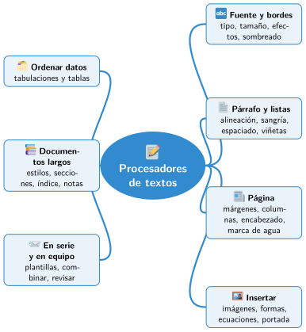

Bloque II · Documentos y presentaciones
UD03 Procesadores de textos
RA4Elabora documentos de textos utilizando las opciones de un procesador de textos tipo.

Sesiones
- Sesión 3.1 Formato de fuente
- Sesión 3.2 Bordes y sombreados
- Sesión 3.3 Párrafo: alineación, sangría y espaciado
- Sesión 3.4 Numeración y viñetas
- Sesión 3.5 Diseño de página y columnas
- Sesión 3.6 Imágenes, formas, ecuaciones y portada
- Sesión 3.7 Encabezado, pie, borde de página y marca de agua
- Sesión 3.8 Tabulaciones
- Sesión 3.9 Tablas
- Sesión 3.10 Estilos, saltos de sección e índice
- Sesión 3.11 Notas al pie, corrector y revisión
- Sesión 3.12 Plantillas, formularios y combinar correspondencia
Al terminar la unidad
Mapa mental de la unidad

✏️ Repasa la unidad con el mapa: tapa una rama y explica en voz alta lo que pone.